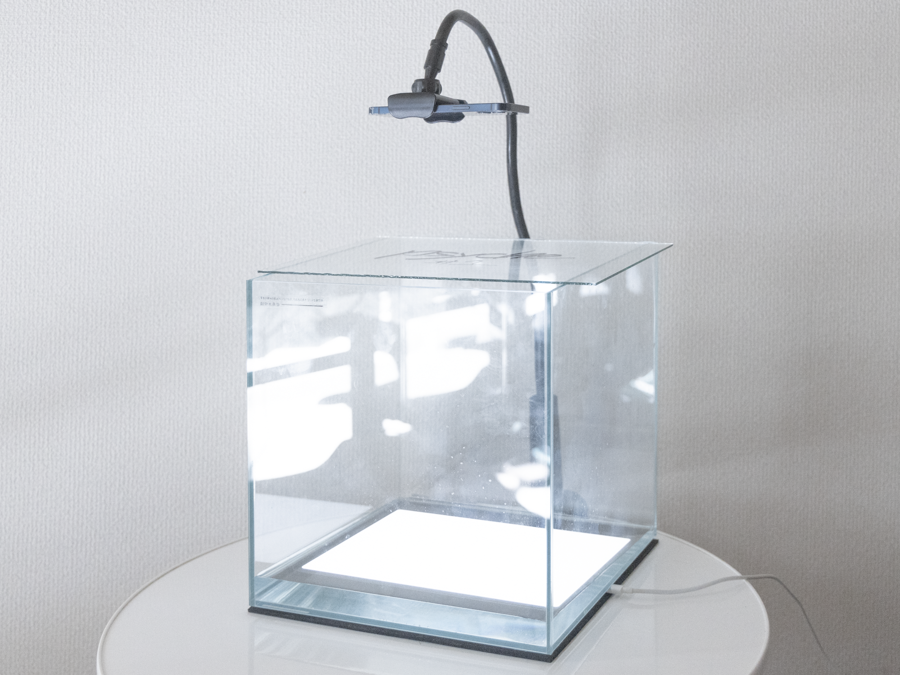
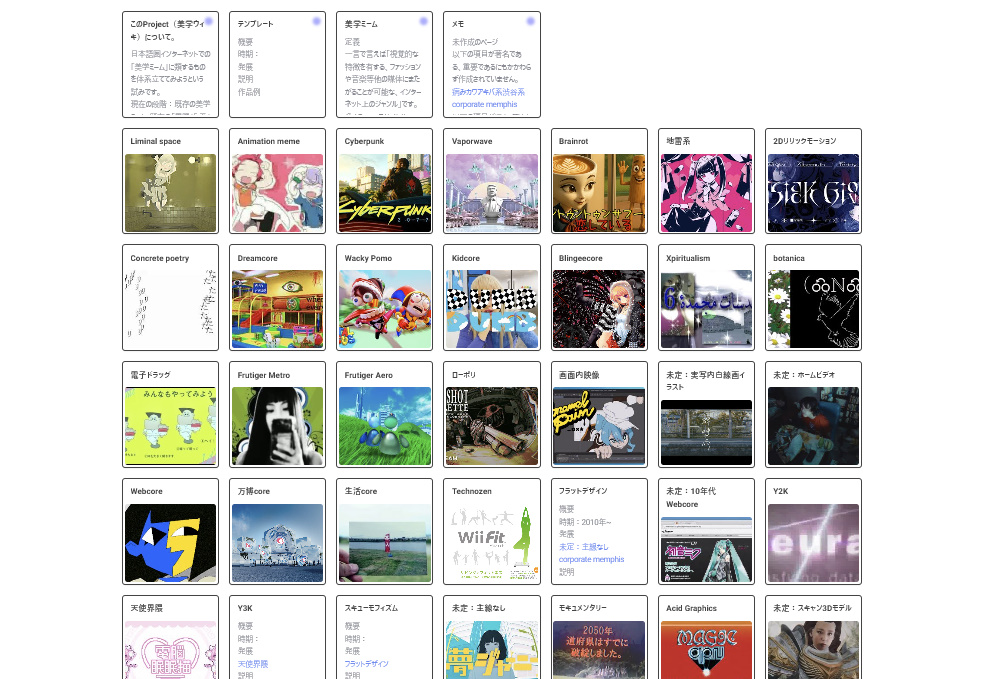
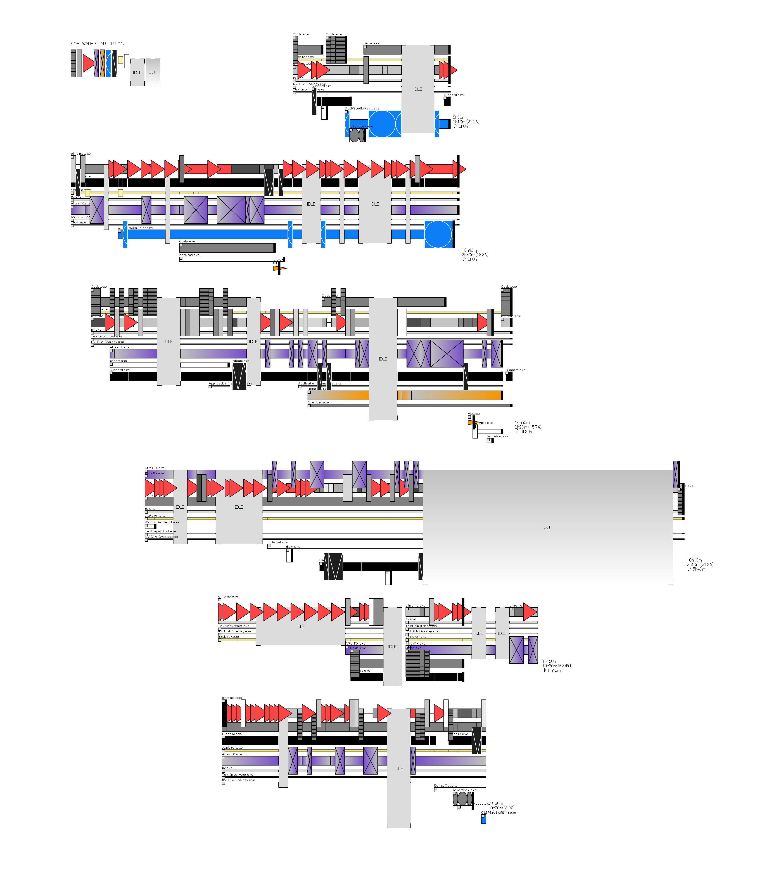

26年S/A 日記
2026-12-31
Cosmic Standardを作りました
2026-08-19
共有リンクはこちらです。 Cosmic_Standard 目的 Cosmic StandardはCosmic sansの揺らぎに工業系サンセリフの末端処理を混ぜたフォントです。 HTML Energy...

2026 W/S 日記
2026-06-29

私のした26年エイプリルフールの解説
2026-04-02

水槽越しにモニターを撮る。
2026-02-20

美学ウィキというCosenseプロジェクトを作りました
2026-02-08

生活VJ
2026-01-19
Bongo Kanade つくった！
2026-01-08
デスクトップマスコットを作りました！ 使用したボイス 以下の配信からお借りしています ｶﾅﾃﾞ～ 【対談】かわいいかわいい後輩の奏さんとお話がしたい #ぽるかなで対談 https://www.yout...

資料画像を軽く整理するツール
2026-01-05

年の報告2025
2025-12-31

ポートフォリオの逆
2025-12-30

CRTディスプレイの再現
2025-12-10

AE向けのXY別軸の桑原(Kuwahara)フィルタ
2025-11-14

ブログらしきものを作る。
2025-10-31